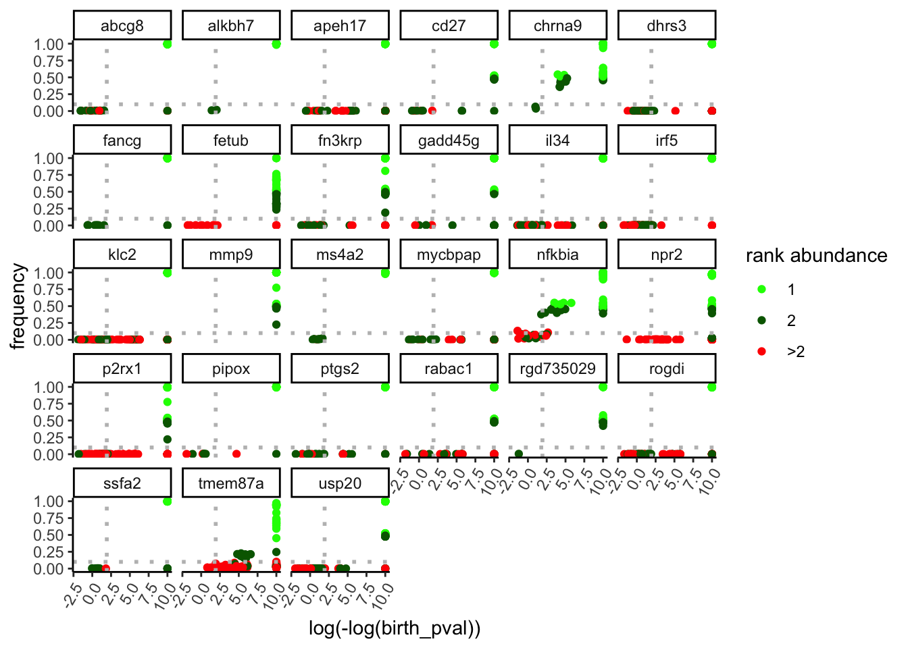
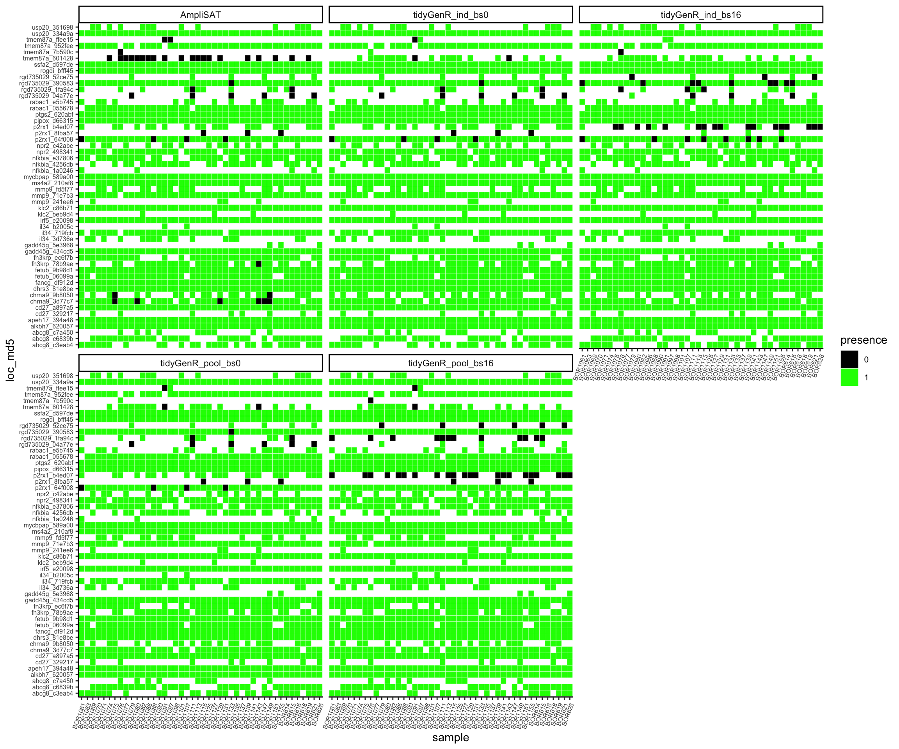
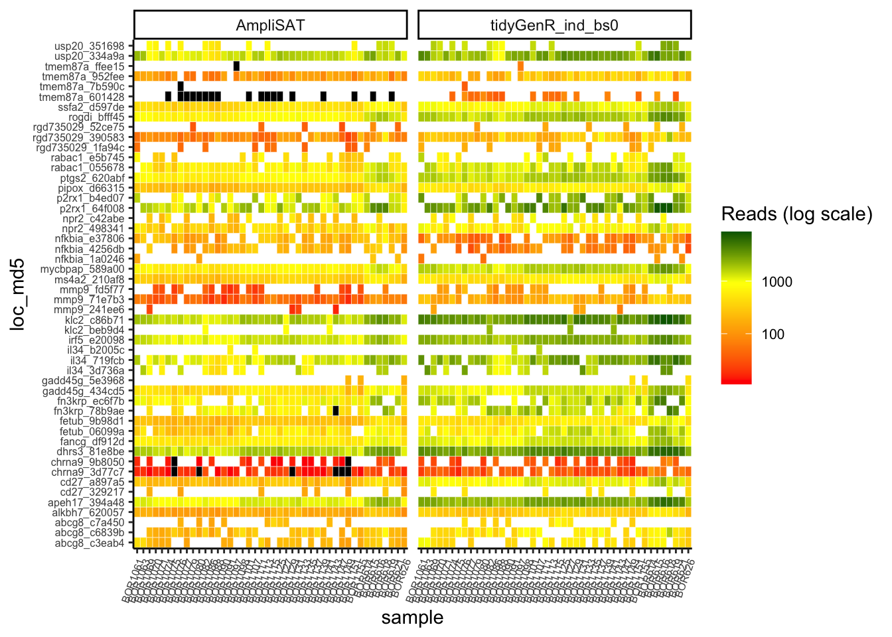
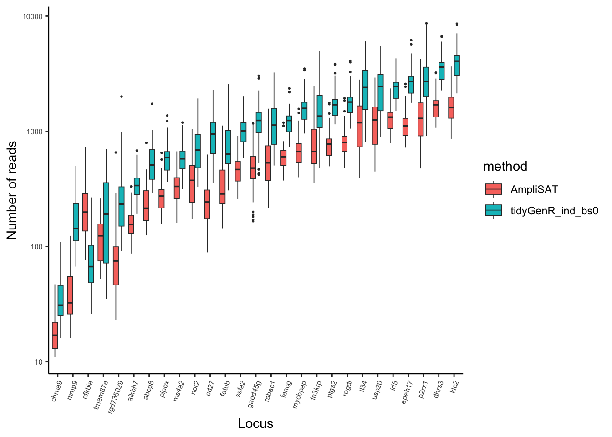
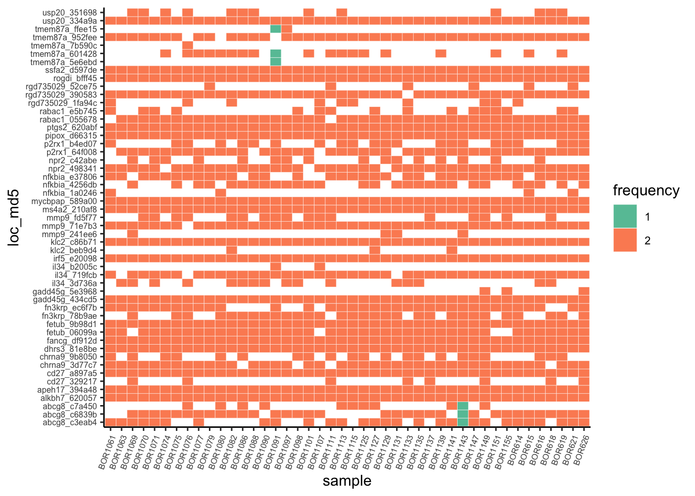

library(tidyGenR)
library(dplyr)
library(patchwork)
library(ggplot2)tidyGenR benchmarking
Attach libraries:
Code
# declare logicals to trigger EVAL in intensive code chunks
# they are not run if output already exists.
# to run fresh analysis outputs need to be removed.
# demultiplex
c_log <- "output/cutadapt.log"
eval_demultiplex <- !file.exists(c_log)
# fastqc
multiqc_report <- "output/multiqc_report.html"
eval_fastqc <- !file.exists(multiqc_report)
# truncate
tr_path <- "output/trunc_in-out.rds"
eval_truncate <- !file.exists(tr_path)
# explore_dada
x_out_path <- "output/explore_dada.rds"
eval_x <- !file.exists(x_out_path)
# variant_call
x_variants_path <- "output/variants_x.rds"
eval_variant_call <- !file.exists(x_variants_path)
# genotype
x_genotypes_path <- "output/genotypes_x.rds"
eval_genotype <- !file.exists(x_genotypes_path)
# amplisas
amplisas_results <- ""
eval_amplisas <- !file.exists(amplisas_results)Benchmarking tidyGenR
This repository accompanies the R package tidyGenR available at https://github.com/csmiguel/tidyGenR. It covers (1) all steps for genotype calling with tidyGenR, (2) exploration of the parameters for variant calling, and (3) comparison of tidyGenR against AmpliSAS. It uses real data from a population genetics study of the wild rodent Rattus baluensis (Camacho-Sanchez et al. in preparation).
Preparation of input data
Raw sequences are deposited in NCBI under the BioStudy SRP293699, in the BioProject PRJNA680166. From the BioStudy, we can download the SRA metadata to mapping later sample IDs to SRRs.
# table with mapped SRR-sampleIDs
srr <-
read.csv("data/raw/SraRunTable.csv") |>
select(Run, "Sample.Name") |>
rename(run = Run,
sample = "Sample.Name")
knitr::kable(head(srr, 3))| run | sample |
|---|---|
| SRR13106799 | BOR1063 |
| SRR13106800 | BOR1061 |
| SRR13106802 | BOR626 |
Raw FASTQ reads from the SRRs can be downloaded with SRA-toolkit. Then, they are renamed based on the data/raw/SraRunTable.csv mapping file.
# download raw reads from NCBI
# they are not downloaded if already present in 'data/raw'.
invisible(
apply(srr, 1, function(x) {
# name paths
srr_path <- file.path("data/raw", x[1])
srr1 <- file.path("data/raw", paste0(x[1], "_1.fastq"))
srr2 <- file.path("data/raw", paste0(x[1], "_2.fastq"))
sam1 <- file.path("data/raw", paste0(x[2], "_1.fastq"))
sam2 <- file.path("data/raw", paste0(x[2], "_2.fastq"))
# fetch SRR
if (!any(dir.exists(srr_path) || file.exists(sam1))) {
system2("prefetch", paste("-O", "data/raw/", x[1]))
}
if (!file.exists(sam1)) {
# reformat to FASTQ
system2("fasterq-dump", paste("-O", "data/raw/", srr_path))
# rename SRR with sample codes
system2("mv", paste(srr1, sam1))
system2("mv", paste(srr2, sam2))
# rm SRR
system2("rm", paste0("-r ", srr_path, "*"))
}
})
)List some of the downloaded files:
list.files("data/raw", pattern = "fastq", full.names = TRUE)[1:3][1] "data/raw/BOR1061_1.fastq" "data/raw/BOR1061_2.fastq"
[3] "data/raw/BOR1063_1.fastq"Check input raw fastq:
freads <- list.files("data/raw", pattern = "1.fastq",
full.names = TRUE)
rreads <- list.files("data/raw", pattern = "2.fastq",
full.names = TRUE)
chr <- check_raw_reads(freads, rreads, low_readcount = 10)All F and (R files) passed check on number of reads above 10.Sample names are unique.All F files have their corresponding R file.Input FASTQ complies with expected input for tidyGenR. A total of 44 samples are detected:
chr$samples [1] "BOR1061" "BOR1063" "BOR1069" "BOR1070" "BOR1071" "BOR1074" "BOR1075"
[8] "BOR1076" "BOR1077" "BOR1079" "BOR1080" "BOR1082" "BOR1086" "BOR1088"
[15] "BOR1090" "BOR1091" "BOR1097" "BOR1098" "BOR1101" "BOR1107" "BOR1111"
[22] "BOR1113" "BOR1115" "BOR1125" "BOR1127" "BOR1129" "BOR1131" "BOR1133"
[29] "BOR1135" "BOR1137" "BOR1139" "BOR1141" "BOR1143" "BOR1147" "BOR1149"
[36] "BOR1151" "BOR1155" "BOR614" "BOR615" "BOR616" "BOR618" "BOR619"
[43] "BOR621" "BOR626" Demultiplex by locus
Reads are demultiplexed by locus using primer sequences in paired-end mode.
# load primer data
data("primers")
# path to cutadapt
cutadapt <- system("which cutadapt", intern = TRUE)
# path to folder save locus-demultiplexed FASTQ
demult <- "data/intermediate/demultiplexed"
# print primers
knitr::kable(head(primers, 3))| locus | fw | rv |
|---|---|---|
| nfkbia | GCCTCCAAACACACAGTCAT | TGAGGAGAGCTATGACACGG |
| chrna9 | TTATCTGGGAGAGCGTGACC | TTGGGAAARGATGAACCGGC |
| rogdi | AGAARCCGGCTCACTACCC | GAGGCACAGCTTGTTGAGG |
# demultiplex
demultiplex(
interpreter = "/bin/bash",
cutadapt = cutadapt,
freads = freads,
rreads = rreads,
primers = primers,
sh_out = "code/demultiplex.sh",
write_demultiplexed = demult,
log_out = c_log,
mode = "pe",
run = TRUE)Glimpse demultiplexed FASTQ:
list.files(demult, pattern = "fastq", full.names = TRUE)[1:3][1] "data/intermediate/demultiplexed/BOR1061.abcg8.1.fastq.gz"
[2] "data/intermediate/demultiplexed/BOR1061.abcg8.2.fastq.gz"
[3] "data/intermediate/demultiplexed/BOR1061.alkbh7.1.fastq.gz"Remove files with few reads:
remove_poor_fastq(demult,
min_reads = 10)Make sequence-quality reports using FastQC and MultiQC. Instead of running it over the >2000 demultiplexed files, it will be run over 100 random files.
# instead of running fastqc to all files > 2000, I run
# it on 100 random files.
dem_files <-
list.files(demult, "fastq.gz", full.names = TRUE)
# select 100 random files
random_dem <-
sample(dem_files, 100, replace = FALSE)
# copy to temp dir
temp_dem <- file.path(tempdir(), "dem")
dir.create(temp_dem)
file.copy(from = random_dem, to = temp_dem)
# run fastqc
system2("fastqc",
paste("--noextract -o",
temp_dem,
paste0(temp_dem, "/*fastq.gz")))
# run multiqc
system2("multiqc",
paste("-o output", temp_dem))Truncate reads
Reads are truncated to a given length for each locus. The truncation lengths depend on the sequence qualities for forward and reverse reads. After per-base sequence-qualities in the output/multiqc_report.html, 270 nt for forward reads and 180 for reverse reads seem reasonable truncation lengths. For some loci, specific truncation lengths were set to maximize the number of reads returned. That is, a data.frame with truncation lengths for forward and reverse reads was built to maximize the amount of information yielded by each locus. For instance, the amplicons for some loci, as nfkbia, are long and it is a good trade-off to keep the low quality ends but to be sure both F and R reads overlap.
A data.frame with locus-specific truncation lengths was built.
Code
loci <-
tidyGenR:::check_names_demultiplexed(demult,
fw_pattern = "1.fastq.gz",
rv_pattern = "2.fastq.gz")$loci
trunc_fr <-
data.frame(locus = loci,
trunc_f = 270,
trunc_r = 180)
# introduce manual values
trunc_fr[which(loci == "rgd735029"), "trunc_f"] <- 245
trunc_fr[which(loci == "rgd735029"), "trunc_r"] <- 155
trunc_fr[which(loci == "fancg"), "trunc_r"] <- 190
trunc_fr[which(loci == "nfkbia"), "trunc_r"] <- 240
trunc_fr[which(loci == "tmem87a"), "trunc_r"] <- 160
# glimpse data.frame with locus-specific truncation lengths
knitr::kable(head(trunc_fr, 3))| locus | trunc_f | trunc_r |
|---|---|---|
| abcg8 | 270 | 180 |
| alkbh7 | 270 | 180 |
| apeh17 | 270 | 180 |
Truncate reads according to locus-specific truncation lengths:
tr_dir <- "data/intermediate/truncated"# truncate
trunc_out <-
trunc_amp(in_dir = demult,
fw_pattern = "1.fastq.gz",
rv_pattern = "2.fastq.gz",
trunc_fr = trunc_fr,
write_trun = tr_dir,
max_ee = c(4, 5),
trunc_q = 2)
# save reads in and out
saveRDS(trunc_out, tr_path)The output from trunc_amp() is a list of matrices with IN and OUT reads after truncation.
# see trunc_out
lapply(trunc_out[seq_len(3)], head, 3)$abcg8
reads.in reads.out
BOR1061 1716 1039
BOR1063 1616 992
BOR1069 1634 961
$alkbh7
reads.in reads.out
BOR1061 546 398
BOR1063 499 361
BOR1069 546 374
$apeh17
reads.in reads.out
BOR1061 3719 2773
BOR1063 3761 2793
BOR1069 3756 2838Truncated FASTQ with low number of reads can be removed:
remove_poor_fastq(tr_dir,
min_reads = 10)2376 files have been KEPT.
0 files REMOVED:Exploration of the parameter space
The function explore_dada() can be used to explore the effect of some DADA2 parameters (“OMEGA_A”, “BAND_SIZE”, “pool”) on the sensitivity on the variant calling.
- omega_a: threshold for variants to be significant overabundant log(-log(birth_pval)) (see Rosen et al. 2012).
- band_size: positive numbers set a band size in Needleman-Wunsch alignments and ends free alignment is performed. A value of zero turns off banding, triggering full Needleman-Wunsch alignments, in which gapless alignment is performed (see issue).
- pool: calling variants pooling samples can increase sensitivity (see dicussion).
The returned plots can be used to guide the selection of the best OMEGA_A in variant_call(), or frequency (maf) and abundance thresholds (ad) for filtering variants.
Explore variants:
# declare candidate OMEGA_A to use in variant_call()
candidate_omega_a <- 10^-2# paths to forward and reverse truncated reads
ftrun <-
list.files(tr_dir, pattern = "_F_", full.names = T)
rtrun <-
list.files(tr_dir, pattern = "_R_", full.names = T)
# candidate omega value to annotate vline in plots.
v_line <- log(-log(candidate_omega_a))
# run explore_dada() with band_size = 0, non pooling and omega_a = 0.9
# forward
F_ind_0 <-
explore_dada(ftrun, band_size = 0, vline = v_line, hline_fr = 0.1)
# reverse
R_ind_0 <-
explore_dada(rtrun, band_size = 0, vline = v_line, hline_fr = 0.1)
# save results
saveRDS(list(F_ind_0 = F_ind_0, R_ind_0 = R_ind_0), x_out_path)Exploration of DADA2 clustering for forward (A, C) and reverse (B, D) reads in Figure 1. The Y-axis represents the frequency of the variant in each locus and sample. The log(-log(birth_pval)) transformation in the X-axis is related to the p-value of a variant being significantly overabundant. Larger x-values represent likely true variants. For representation purposes birth_pval of 0 (thus negative infinite), are converted to 10. Points are color-coded according to the variant rank in read abundance for its given locus and sample. For diploid individuals, green are likely true variants and red are likely false variants. Grey dashed lines are thresholds used for variant_call():
Code
ppool <-
(F_ind_0$p1 | R_ind_0$p1) / (F_ind_0$p2 | R_ind_0$p2) +
patchwork::plot_annotation(title = "Dada F/R pool = F, omega_a 0.9, band_size = 0",
tag_levels = "A")
# save plot with combined loci
ggsave("output/explore_dada.pdf", ppool, width = 8, height = 5)
# print plot
ppool
After the exploration variants in Figure 1, it seems an OMEGA_A = 0.01, implying a cut-off of 1.53 in the X-axis and a frequency threshold (Y-axis) of 0.1, excludes most artifacts while maximizing true positives.
The results can also be explored per-locus. For instance, Figure 1 B can be expanded per locus in Figure 2.
Code
# list of plots per locus
lplots <-
list(loci_f_ind_0_logp = F_ind_0$p3,
loci_r_ind_0_logp = R_ind_0$p3,
loci_f_ind_0_abun = F_ind_0$p4,
loci_r_ind_0_abun = R_ind_0$p4)
# save plots per locus
invisible(
lapply(seq_along(lplots), function(x) {
ggsave(paste0("output/", names(lplots)[x], ".pdf"),
lplots[[x]], width = 6, height = 6)
})
)Code
lplots$loci_r_ind_0_logp
Variant and genotype calling
Variant calling is run using OMEGA_A = 0.01, and under different parameters:
- band_size: 0, 16
- pool: TRUE, FALSE
Samples are genotyped from variant data with defaults ploidy = 2 and ADt = 10:
genotypes_x <-
lapply(variants_x, genotype)Tidy data
A strength from tidyGenR is that variants and genotypes from variant_call() and genotype() are returned as tidy tables: one row per observation and variables in columns. Lets have a look at the data structure.
# glimpse tidy variants
knitr::kable(head(variants_x$ind_bs0))| sample | locus | variant | reads | nt | md5 | sequence |
|---|---|---|---|---|---|---|
| BOR1061 | abcg8 | 01 | 1028 | 390 | c3eab42bea56937040aa79a6bbea2724 | TTGCCCACCCTGTTCATCCATGGAGCAGAAGCCTGCCTGATGTCTCTCATCATTGGCTTCCTTTACTACGGCCACGCAGATAAGCCGCTCTCCTTCGTGGACATGGCAGCCCTCCTGTTCATGATAGGAGCGCTCATTCCTTTTAATGTCATTCTGGATGTCGTCTCCAAATGTGAGTGTCACCCGCCCTCCTCACCAGACATCGGGACAGTGGGACAGCCTCCCTGGGCACTGCACTGAGGCCAAGCTCTGTGCTTCCGCTGGTACCCACGGCATTACAAGAGATGCGACCTCAGTAACACTCTTCGCTCATTCACCTCCCTCTCCCCCATCTCCAGGTCACTCGGAGCGCTCGCTGCTGTACTATGAACTGGAGGACGGACTGTACAC |
| BOR1061 | alkbh7 | 1 | 393 | 390 | 620057f2e547e688d1220db91a3a1d01 | GCCTTCCTGGCCCCATCCCCTCTGGGAGGGAGCGGCAAATCACTGAGATGCGTCGGCCCCGGGGGACCCGGTGAGCCCCAAAAAATGATTCTTCATCTCTAAGGATCTCATGGGAGAAGTCATATCGGGCTGAACCCCTGCAAGAAAATAAAGGCCAAGTAGGTGAAGGGAGGGAAGTCTGTCCCTTCATCATTTCTGTACTTTATCTGGGTAGTGGTGATGGTGACTTCCTCTGCTATGAGAGCAGAAACAAGAGCTGTTGGAAACACTTGGCCTCATCTGGGGGTTCTAGGCTAGGTCATACCTTAGGATATAGAGAGAACCAGGTTCCAGCAACAGTTCCAGCCACTGCTCAGGTTCCTGTGTATGAACCAGCTTCATAACACTTGG |
| BOR1061 | apeh17 | 1 | 2747 | 415 | 394a483d3ae2ce5605f1674b2400986c | AAAGCCAGTGGAGCCACGATAGTTCACTGCAAGTGAGACAAGATAGTCGGGCAATGTTCTCAGTCCCCAACCCAATTCCATGTGTCTGTGACATAGGCCCTAGGACCAGCTGCATCACGTGCTGTCAAGGGGAGGTAGCCAAGAGAGATGAAGCTGCTACCCTGAGACCACAGCATCCTTTCCACAGAAGCTTCAAGTTAATCCACGTGATCACCAGGTTATGAAGCCAGAGGCTAAGCCAGGGCAATTTCTAGTAGTAGTTTCTTTTTGTTTTCAAAACAGGGTTTTTCTGTGCAGTCCTGGATGATCTTGGACTCAAACCTTCACCTGCCTCTGCCTCCTAAGTGCTGGATTAAAGGAGTGTGCCCCCATTGCCCAGCCCGTTTCTAAAGAGTAAGTACACCATAGAAAAGCA |
| BOR1061 | cd27 | 01 | 1143 | 379 | a897a500c934797d4b3662415fc92456 | AGTCTTCCTGGATAGGGATGACGCTGCCCTCCTCCTCCCTGGGGCAGCTGTAAGGACAAAGCTCTTCAGGTACTGCCTGGCTATCTTCATCTGTGCAAAGACAATTAGCCAAGTGTTGGTCAGCAGTGGAGAGAAGAGAGGGGAAGGTGAGGAGAGAGGAGAAGGCCGAGTGGAGGCTGGGGCATGGGGGAGCCAGGGGAGCCTGTGGGAAGGACACTTGAAGAACCAGAGAAGGTGGGTGAAGGTGGGATGGGGGCTTTAGGTGTGGGTGGCAGAGCTGAGAGGGCAGGAGGGAAGGCCTGTGCCTTACTTGGCCCGTGATTTCTTCTTTGACGGAAGAACAAGATCCCACCCAGGACGAAGACAAGAAGCATGCTGG |
| BOR1061 | chrna9 | 01 | 21 | 408 | 3d77c726462281336567895361ceebc1 | TGCAGTGTGACATTCAGCACCGCGTCCGTATCCTCGACTGGACGCAGAGCACTGGAGTAGTCTTCAAAAAGATCGCTGAACAATTTCTGAGCATATTTCCCATTTGCTGTCTCTACGGCTGTTCAAAGAGAAGCACCCGGATGGGCATTTCAAAACAAGACCAACTCTGGGGTCAAAATGGGGGATGGCAACTTTGGATGAGTTCTTTTTTGGGGGCAGGGGACTGGTCTTACCTACCTTGATGATCGAGAGTCAGAAAGAGGTGCGAGCACGCCCATGTACTCACGTCAGTCCTCCTGTCTCTCTCACCAAGGCTCTAAGGAGCCTCTATGGAGCACTGCGCTAGCCCCTCACCTCTGATTCCAGAAGCAGCAAAATACATCCAGCAAAAGGAGATGCAGGACTGGG |
| BOR1061 | chrna9 | 02 | 27 | 408 | 9b805048a29d6233f1ac41f2a6aa1421 | TGCAGTGTGACATTCAGCACCGCGTCCGTATCCTCGACTGGACGCAGAGCACTGGAGTAGTCTTCAAAAAGATCGCTGAATAATTTCTGAGCATATTTCCCATTTGCTGTCTCTACGGCTGTTCAAAGAGAAGCACCCGGATGGGCATTTCAAAACAAGACCAACTCTGGGATCAAAATGGGGGATGGCAACTTTGGATGAGTTCTTTTTTGGGGGCAGGGGACTGGTCTTACCTACCTTGATGATCAAGAGTCAGAAAGAGGTGCGAGCACGCCCATGTACTCACGTCAGTCCTCCTGTCTCTCTCACCAAGGCTCTAAGGAGCCTCTATGGAGCACTGCGCTAGCCCCTCACCTCTGATTCCAGAAGCAGCAAAATACATCCAGCAAAAGGAGATGCAGGACTGGG |
# glimpse tidy genotypes
knitr::kable(head(genotypes_x$ind_bs0))| sample | locus | allele | allele_no | reads | nt | md5 | sequence |
|---|---|---|---|---|---|---|---|
| BOR1061 | abcg8 | 01 | 1 | 514.0 | 390 | c3eab42bea56937040aa79a6bbea2724 | TTGCCCACCCTGTTCATCCATGGAGCAGAAGCCTGCCTGATGTCTCTCATCATTGGCTTCCTTTACTACGGCCACGCAGATAAGCCGCTCTCCTTCGTGGACATGGCAGCCCTCCTGTTCATGATAGGAGCGCTCATTCCTTTTAATGTCATTCTGGATGTCGTCTCCAAATGTGAGTGTCACCCGCCCTCCTCACCAGACATCGGGACAGTGGGACAGCCTCCCTGGGCACTGCACTGAGGCCAAGCTCTGTGCTTCCGCTGGTACCCACGGCATTACAAGAGATGCGACCTCAGTAACACTCTTCGCTCATTCACCTCCCTCTCCCCCATCTCCAGGTCACTCGGAGCGCTCGCTGCTGTACTATGAACTGGAGGACGGACTGTACAC |
| BOR1061 | abcg8 | 01 | 2 | 514.0 | 390 | c3eab42bea56937040aa79a6bbea2724 | TTGCCCACCCTGTTCATCCATGGAGCAGAAGCCTGCCTGATGTCTCTCATCATTGGCTTCCTTTACTACGGCCACGCAGATAAGCCGCTCTCCTTCGTGGACATGGCAGCCCTCCTGTTCATGATAGGAGCGCTCATTCCTTTTAATGTCATTCTGGATGTCGTCTCCAAATGTGAGTGTCACCCGCCCTCCTCACCAGACATCGGGACAGTGGGACAGCCTCCCTGGGCACTGCACTGAGGCCAAGCTCTGTGCTTCCGCTGGTACCCACGGCATTACAAGAGATGCGACCTCAGTAACACTCTTCGCTCATTCACCTCCCTCTCCCCCATCTCCAGGTCACTCGGAGCGCTCGCTGCTGTACTATGAACTGGAGGACGGACTGTACAC |
| BOR1061 | alkbh7 | 1 | 1 | 196.5 | 390 | 620057f2e547e688d1220db91a3a1d01 | GCCTTCCTGGCCCCATCCCCTCTGGGAGGGAGCGGCAAATCACTGAGATGCGTCGGCCCCGGGGGACCCGGTGAGCCCCAAAAAATGATTCTTCATCTCTAAGGATCTCATGGGAGAAGTCATATCGGGCTGAACCCCTGCAAGAAAATAAAGGCCAAGTAGGTGAAGGGAGGGAAGTCTGTCCCTTCATCATTTCTGTACTTTATCTGGGTAGTGGTGATGGTGACTTCCTCTGCTATGAGAGCAGAAACAAGAGCTGTTGGAAACACTTGGCCTCATCTGGGGGTTCTAGGCTAGGTCATACCTTAGGATATAGAGAGAACCAGGTTCCAGCAACAGTTCCAGCCACTGCTCAGGTTCCTGTGTATGAACCAGCTTCATAACACTTGG |
| BOR1061 | alkbh7 | 1 | 2 | 196.5 | 390 | 620057f2e547e688d1220db91a3a1d01 | GCCTTCCTGGCCCCATCCCCTCTGGGAGGGAGCGGCAAATCACTGAGATGCGTCGGCCCCGGGGGACCCGGTGAGCCCCAAAAAATGATTCTTCATCTCTAAGGATCTCATGGGAGAAGTCATATCGGGCTGAACCCCTGCAAGAAAATAAAGGCCAAGTAGGTGAAGGGAGGGAAGTCTGTCCCTTCATCATTTCTGTACTTTATCTGGGTAGTGGTGATGGTGACTTCCTCTGCTATGAGAGCAGAAACAAGAGCTGTTGGAAACACTTGGCCTCATCTGGGGGTTCTAGGCTAGGTCATACCTTAGGATATAGAGAGAACCAGGTTCCAGCAACAGTTCCAGCCACTGCTCAGGTTCCTGTGTATGAACCAGCTTCATAACACTTGG |
| BOR1061 | apeh17 | 1 | 1 | 1373.5 | 415 | 394a483d3ae2ce5605f1674b2400986c | AAAGCCAGTGGAGCCACGATAGTTCACTGCAAGTGAGACAAGATAGTCGGGCAATGTTCTCAGTCCCCAACCCAATTCCATGTGTCTGTGACATAGGCCCTAGGACCAGCTGCATCACGTGCTGTCAAGGGGAGGTAGCCAAGAGAGATGAAGCTGCTACCCTGAGACCACAGCATCCTTTCCACAGAAGCTTCAAGTTAATCCACGTGATCACCAGGTTATGAAGCCAGAGGCTAAGCCAGGGCAATTTCTAGTAGTAGTTTCTTTTTGTTTTCAAAACAGGGTTTTTCTGTGCAGTCCTGGATGATCTTGGACTCAAACCTTCACCTGCCTCTGCCTCCTAAGTGCTGGATTAAAGGAGTGTGCCCCCATTGCCCAGCCCGTTTCTAAAGAGTAAGTACACCATAGAAAAGCA |
| BOR1061 | apeh17 | 1 | 2 | 1373.5 | 415 | 394a483d3ae2ce5605f1674b2400986c | AAAGCCAGTGGAGCCACGATAGTTCACTGCAAGTGAGACAAGATAGTCGGGCAATGTTCTCAGTCCCCAACCCAATTCCATGTGTCTGTGACATAGGCCCTAGGACCAGCTGCATCACGTGCTGTCAAGGGGAGGTAGCCAAGAGAGATGAAGCTGCTACCCTGAGACCACAGCATCCTTTCCACAGAAGCTTCAAGTTAATCCACGTGATCACCAGGTTATGAAGCCAGAGGCTAAGCCAGGGCAATTTCTAGTAGTAGTTTCTTTTTGTTTTCAAAACAGGGTTTTTCTGTGCAGTCCTGGATGATCTTGGACTCAAACCTTCACCTGCCTCTGCCTCCTAAGTGCTGGATTAAAGGAGTGTGCCCCCATTGCCCAGCCCGTTTCTAAAGAGTAAGTACACCATAGAAAAGCA |
Genotype with AmpliSAT
Genotyping was also carried with AmpliSAT, a software written in PERL with similar characteristics to tidyGenR. To compare their performance we run AmpliSAT in a DOCKER container to genotype the same raw data. The steps are detailed here. AmpliSAS returns results in a multisheet EXCEL and in plain text files, one per locus. The function amplisas2tidy() permits to read plain text results from AmpliSAS into tidy variants.
Create input for AmpliSAS:
# amplicon metadata
source("code/amplisas/01_create_amplicon_data.R")
# append barcodes to reads
source("code/amplisas/02_add_barcodes.R")AmpliSAS is run in a DOCKER container. The steps are detailed here.
AmpliSAS results can be read to tidy variants:
fp <- list.files("data/intermediate/amplisas/results_amplisas/filtered",
pattern = "txt$",
full.names = TRUE)
# amplisas results to tidy variants
var_amplisas <-
amplisas2tidy(fp)
# to genotypes
gen_amplisas <-
genotype(var_amplisas)
knitr::kable(head(var_amplisas, 3))| sample | locus | variant | reads | nt | md5 | sequence |
|---|---|---|---|---|---|---|
| BOR1061 | abcg8 | 97168 | 467 | 390 | c3eab42bea56937040aa79a6bbea2724 | TTGCCCACCCTGTTCATCCATGGAGCAGAAGCCTGCCTGATGTCTCTCATCATTGGCTTCCTTTACTACGGCCACGCAGATAAGCCGCTCTCCTTCGTGGACATGGCAGCCCTCCTGTTCATGATAGGAGCGCTCATTCCTTTTAATGTCATTCTGGATGTCGTCTCCAAATGTGAGTGTCACCCGCCCTCCTCACCAGACATCGGGACAGTGGGACAGCCTCCCTGGGCACTGCACTGAGGCCAAGCTCTGTGCTTCCGCTGGTACCCACGGCATTACAAGAGATGCGACCTCAGTAACACTCTTCGCTCATTCACCTCCCTCTCCCCCATCTCCAGGTCACTCGGAGCGCTCGCTGCTGTACTATGAACTGGAGGACGGACTGTACAC |
| BOR1061 | alkbh7 | 62348 | 185 | 390 | 620057f2e547e688d1220db91a3a1d01 | GCCTTCCTGGCCCCATCCCCTCTGGGAGGGAGCGGCAAATCACTGAGATGCGTCGGCCCCGGGGGACCCGGTGAGCCCCAAAAAATGATTCTTCATCTCTAAGGATCTCATGGGAGAAGTCATATCGGGCTGAACCCCTGCAAGAAAATAAAGGCCAAGTAGGTGAAGGGAGGGAAGTCTGTCCCTTCATCATTTCTGTACTTTATCTGGGTAGTGGTGATGGTGACTTCCTCTGCTATGAGAGCAGAAACAAGAGCTGTTGGAAACACTTGGCCTCATCTGGGGGTTCTAGGCTAGGTCATACCTTAGGATATAGAGAGAACCAGGTTCCAGCAACAGTTCCAGCCACTGCTCAGGTTCCTGTGTATGAACCAGCTTCATAACACTTGG |
| BOR1061 | apeh17 | 81256 | 1120 | 415 | 394a483d3ae2ce5605f1674b2400986c | AAAGCCAGTGGAGCCACGATAGTTCACTGCAAGTGAGACAAGATAGTCGGGCAATGTTCTCAGTCCCCAACCCAATTCCATGTGTCTGTGACATAGGCCCTAGGACCAGCTGCATCACGTGCTGTCAAGGGGAGGTAGCCAAGAGAGATGAAGCTGCTACCCTGAGACCACAGCATCCTTTCCACAGAAGCTTCAAGTTAATCCACGTGATCACCAGGTTATGAAGCCAGAGGCTAAGCCAGGGCAATTTCTAGTAGTAGTTTCTTTTTGTTTTCAAAACAGGGTTTTTCTGTGCAGTCCTGGATGATCTTGGACTCAAACCTTCACCTGCCTCTGCCTCCTAAGTGCTGGATTAAAGGAGTGTGCCCCCATTGCCCAGCCCGTTTCTAAAGAGTAAGTACACCATAGAAAAGCA |
Compare results
compare_calls() was used for comparing results of tidyGenR run with different sets of parameters between them and agains AmpliSAT results. The comparison indicates that the set of parameters that returns the most similar genotype calls to AmpliSAT is using a band size = 0.
# compare genotypes of the four runs plus amplisat
# genotypes
gen_comb <-
c(genotypes_x,
list(gen_amplisas))
names(gen_comb) <- c(stringr::str_c("tidyGenR_", names(genotypes_x)), "AmpliSAT")
comp_gen <-
suppressMessages(compare_calls(gen_comb,
"output/comp_gen_noReads.xlsx",
creads = FALSE))
knitr::kable(comp_gen$dist)| method1 | method2 | dist_euc | dist_eucp |
|---|---|---|---|
| tidyGenR_ind_bs16 | tidyGenR_ind_bs0 | 47 | 0.0205420 |
| tidyGenR_ind_bs16 | tidyGenR_pool_bs16 | 42 | 0.0183566 |
| tidyGenR_ind_bs16 | tidyGenR_pool_bs0 | 47 | 0.0205420 |
| tidyGenR_ind_bs16 | AmpliSAT | 74 | 0.0323427 |
| tidyGenR_ind_bs0 | tidyGenR_pool_bs16 | 51 | 0.0222902 |
| tidyGenR_ind_bs0 | tidyGenR_pool_bs0 | 0 | 0.0000000 |
| tidyGenR_ind_bs0 | AmpliSAT | 29 | 0.0126748 |
| tidyGenR_pool_bs16 | tidyGenR_pool_bs0 | 51 | 0.0222902 |
| tidyGenR_pool_bs16 | AmpliSAT | 78 | 0.0340909 |
| tidyGenR_pool_bs0 | AmpliSAT | 29 | 0.0126748 |
A plot produced by compare_calls() depicts the differences between strategies. It is useful for spotting potential biases and problematic loci (Figure 3).
Code
comp_gen$plot2
Problematic loci, with low coverage and with conflicting genotypes between different strategies were checked manually by aligning them and compared the with dereplicated reads. Setting band_size = 0 yielded the best results as it recovered alleles which had indels at their ends. Pooling samples did not affect genotype calls, although it has some influence on the number of reads supporting each allele. Thus samples not sharing alleles (i.e. different species) can be genotyped equally efficiently as samples sharing alleles (i.e. same species). Then, the run with band size = 0 and non-pooled samples was chosen as the best strategy and compared pairwise with AmpliSAT.
# compare best call with amplisas
# variants
comp_gen_sel <-
compare_calls(list(tidyGenR_ind_bs0 = genotypes_x$ind_bs0,
AmpliSAT = gen_amplisas),
"output/comp_gen_indbs0_amplisat.xlsx",
creads = TRUE)
saveRDS(comp_gen_sel, "output/comp_gen_sel.rds")Code
pcomp1 <- comp_gen_sel$plot2
ggsave(pcomp1,
file = "output/comp_amplisat_indo.pdf",
width = 10,
height = 5.4)
pcomp1
Code
pcomp2 <- comp_gen_sel$plot3
ggsave(pcomp2,
file = "output/comp_amplisat_ind0_boxplot.pdf",
width = 5,
height = 3)
pcomp2
Lastly, the genotypes can be compared against their respective variants to have an idea of variants being dropped when genotyping:
Code
dropped_var <-
list(variants = variants_x$ind_bs0,
genotypes = genotypes_x$ind_bs0)
comp_var_gen <- compare_calls(dropped_var)
saveRDS(comp_var_gen, "output/comp_var_gen.rds")
comp_var_gen$plot1
Session Info
sessionInfo()R version 4.4.0 (2024-04-24)
Platform: x86_64-apple-darwin20
Running under: macOS 15.3.2
Matrix products: default
BLAS: /Library/Frameworks/R.framework/Versions/4.4-x86_64/Resources/lib/libRblas.0.dylib
LAPACK: /Library/Frameworks/R.framework/Versions/4.4-x86_64/Resources/lib/libRlapack.dylib; LAPACK version 3.12.0
locale:
[1] en_US.UTF-8/en_US.UTF-8/en_US.UTF-8/C/en_US.UTF-8/en_US.UTF-8
time zone: Europe/Madrid
tzcode source: internal
attached base packages:
[1] stats graphics grDevices utils datasets methods base
other attached packages:
[1] ggplot2_3.5.1 patchwork_1.3.0 dplyr_1.1.4 tidyGenR_0.8.3
loaded via a namespace (and not attached):
[1] writexl_1.5.1 tidyselect_1.2.1
[3] farver_2.1.2 Biostrings_2.72.1
[5] bitops_1.0-9 fastmap_1.2.0
[7] dada2_1.32.0 GenomicAlignments_1.40.0
[9] digest_0.6.37 lifecycle_1.0.4
[11] pwalign_1.0.0 magrittr_2.0.3
[13] compiler_4.4.0 rlang_1.1.5
[15] tools_4.4.0 yaml_2.3.10
[17] knitr_1.49 labeling_0.4.3
[19] S4Arrays_1.4.1 htmlwidgets_1.6.4
[21] interp_1.1-6 DelayedArray_0.30.1
[23] plyr_1.8.9 RColorBrewer_1.1-3
[25] abind_1.4-8 ShortRead_1.62.0
[27] BiocParallel_1.38.0 withr_3.0.2
[29] purrr_1.0.4 hwriter_1.3.2.1
[31] BiocGenerics_0.50.0 grid_4.4.0
[33] stats4_4.4.0 latticeExtra_0.6-30
[35] colorspace_2.1-1 scales_1.3.0
[37] SummarizedExperiment_1.34.0 cli_3.6.4
[39] rmarkdown_2.29 crayon_1.5.3
[41] ragg_1.3.3 generics_0.1.3
[43] RcppParallel_5.1.10 rstudioapi_0.17.1
[45] httr_1.4.7 reshape2_1.4.4
[47] tzdb_0.4.0 DBI_1.2.3
[49] stringr_1.5.1 zlibbioc_1.50.0
[51] parallel_4.4.0 XVector_0.44.0
[53] matrixStats_1.5.0 vctrs_0.6.5
[55] Matrix_1.7-2 jsonlite_1.8.9
[57] IRanges_2.38.1 hms_1.1.3
[59] S4Vectors_0.42.1 systemfonts_1.2.1
[61] jpeg_0.1-10 tidyr_1.3.1
[63] glue_1.8.0 codetools_0.2-20
[65] stringi_1.8.4 gtable_0.3.6
[67] GenomeInfoDb_1.40.1 deldir_2.0-4
[69] GenomicRanges_1.56.2 UCSC.utils_1.0.0
[71] munsell_0.5.1 tibble_3.2.1
[73] pillar_1.10.1 htmltools_0.5.8.1
[75] GenomeInfoDbData_1.2.12 R6_2.6.1
[77] textshaping_1.0.0 evaluate_1.0.3
[79] lattice_0.22-6 Biobase_2.64.0
[81] readr_2.1.5 png_0.1-8
[83] Rsamtools_2.20.0 DECIPHER_3.0.0
[85] Rcpp_1.0.14 SparseArray_1.4.8
[87] xfun_0.50 MatrixGenerics_1.16.0
[89] pkgconfig_2.0.3